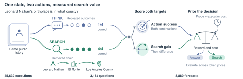
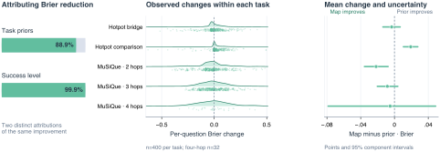
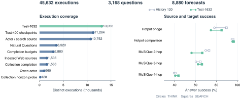

Predict success
How likely is each continuation to produce a correct answer?
Action probabilities · Brier errorA BENCHMARK FOR SEARCH VALUE IN AI AGENTS
Turn execution experience into a sharper test of when an AI agent should search.
Measure answer success, the gain from further search, and the value of the final decision.
01 / THE BENCHMARK
Shared histories. Repeated outcomes. Explicit costs.A useful search decision starts with knowing what the next action will change. SearchHorizonBench follows that information from prediction to decision.
How likely is each continuation to produce a correct answer?
Action probabilities · Brier errorHow much does another search improve expected answer quality?
Search-value error · Gain R²Does the expected gain justify the cost of obtaining more information?
Reward minus cost · Decision utility
02 / THE CENTRAL FINDING
Success prediction and search-value prediction carry different informationExecution history improves forecasts of answer success. Paired evaluation reveals how much of that improvement reaches the estimated benefit of searching.
Historical correction compared with global action means on Test-1632.
Schematic of question-specific variation
Tested historical estimators explain less than 2% of gain variance in point estimates.
of the observed Brier improvement is recovered by simple task-category priors. The benchmark measures task difficulty and additional search value separately.
Read the analysis
03 / EXPLORE THE DECISION
Interactive · Recorded measurementsHold one kind of information fixed and vary the other. See how knowledge of search gains and token costs changes decision utility.
Utility equals answer correctness minus λ times thousands of tokens.
with question-specific
gain and cost information
Information-value diagnostic. Each rule uses two outcome draws per action for selection and two disjoint draws for evaluation. Selection observations are free. These values quantify a sample-informed opportunity; deployable methods are separately charged for acquiring their signals. All 36 splits use Test-1632 and reference-equivalent correctness. View the measurements ↗
04 / THE EXECUTION RESOURCE
Common metrics across multiple settingsSaved executions connect model families, retrieval services, budget choices and answer rewards through the same success, gain and decision measurements.
DeepSeek Flash · Pro · Qwen
DeepSeek · Serper · Tavily
ClueWeb22 · FineWeb
Multi-hop QA · Natural Questions · Set completion

05 / GET STARTED
Bring a predictor. Measure its value.Use the saved execution records to evaluate a new search-value estimator. Compare success probabilities, noise-corrected gains and decision utility against matched historical baselines.
Download code & dataunzip SearchHorizonBench.zip
cd SearchHorizonBench
python -m pip install -r requirements.txt
python scripts/replay_examples.pyTHE PAPER
A Benchmark for Search Value in AI Agents
Carnegie Mellon University
* Corresponding author
@misc{ning2026searchhorizonbench,
title = {SearchHorizonBench: A Benchmark
for Search Value in AI Agents},
author = {Ning, Jingjie and Li, Xueqi
and Kong, Yibo},
year = {2026},
note = {Manuscript and benchmark},
url = {https://ethanning.github.io/SearchHorizonBench/}
}